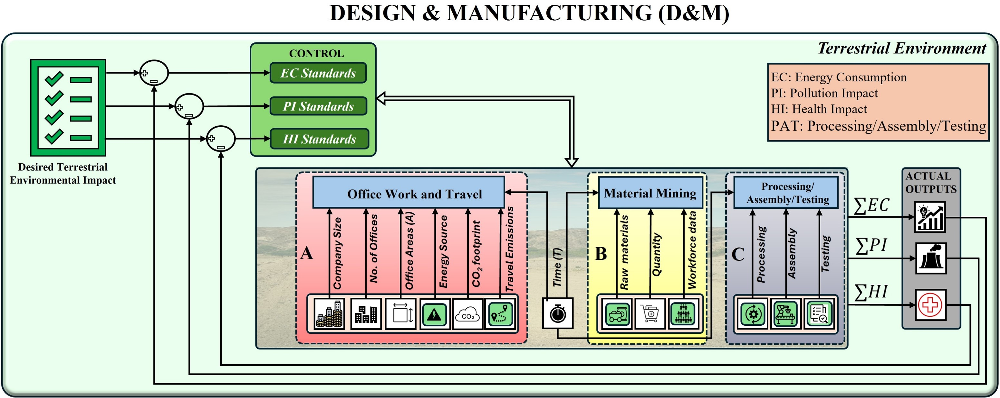
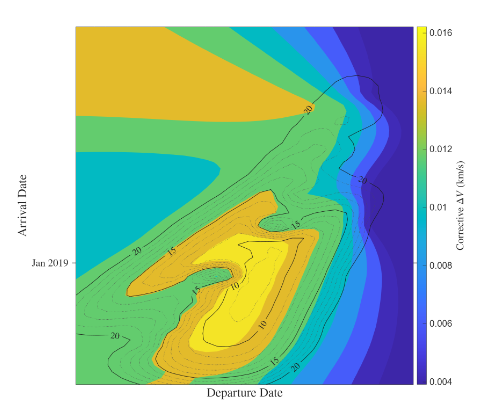

ad-ASSTRA: Towards A Sustainable Space Technology Roadmapping ArchitectureView project details
ad-ASSTRA: Towards A Sustainable Space Technology Roadmapping ArchitectureView project details Projects
Our research develops practical approaches to space sustainability, mission design, and public engagement.
ad-ASSTRA: Towards A Sustainable Space Technology Roadmapping ArchitectureView project details 
Visions of, and steps towards, an Environmentally Sustainable Space FutureView project details
Advancing Efficiency in Space Mission DesignView project details Look Up! A real-time demonstration of orbital crowdingView project details
Look Up! A real-time demonstration of orbital crowdingView project details